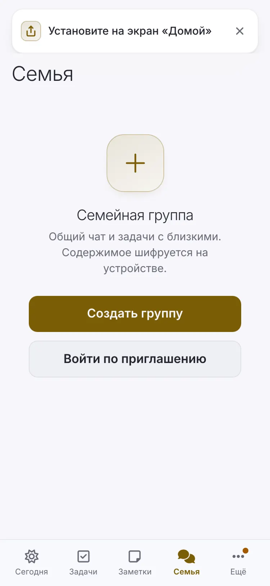
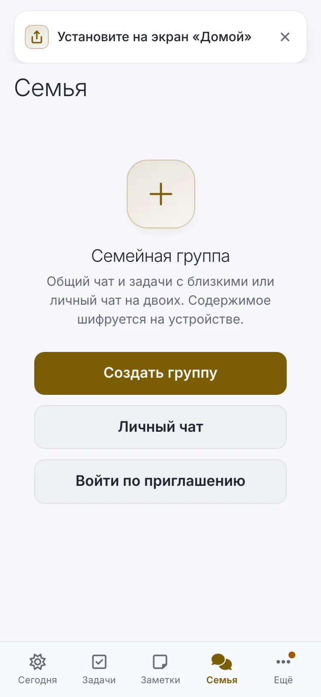
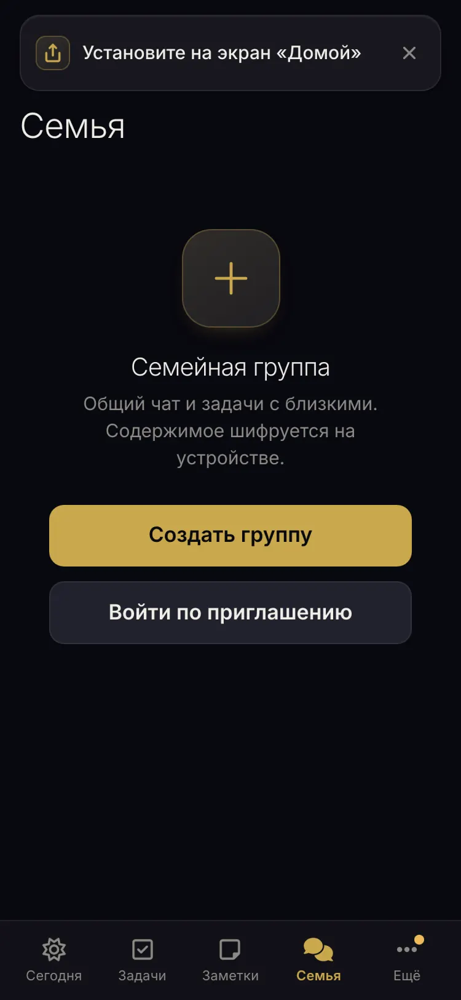
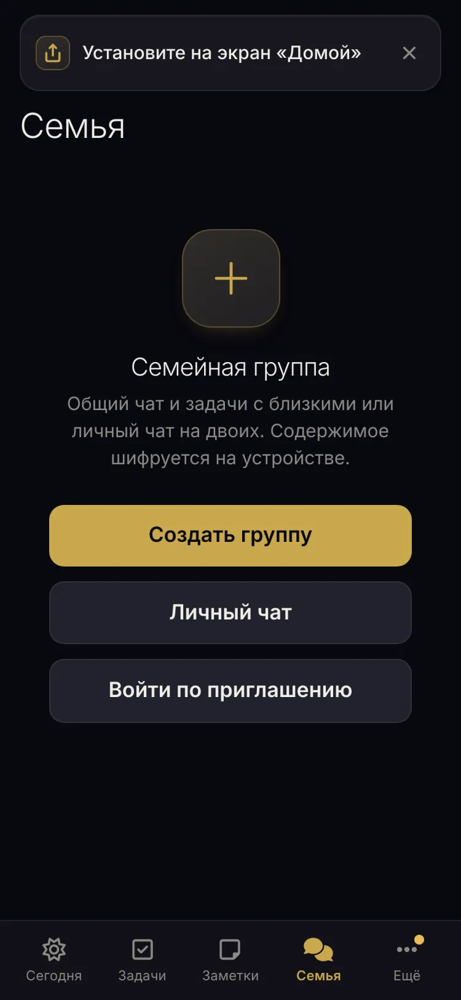

Первый экран без групп
Как сейчас — светлая
Только группа или вход по чужому приглашению

Стало — светлая (в А и Б одинаково)
Третья кнопка «Личный чат» — та же шторка и QR

Как сейчас — тёмная
Личный чат с первого раза завести нельзя

Стало — тёмная
Личный чат без групп встаёт в «Личные», а не «Группой»
